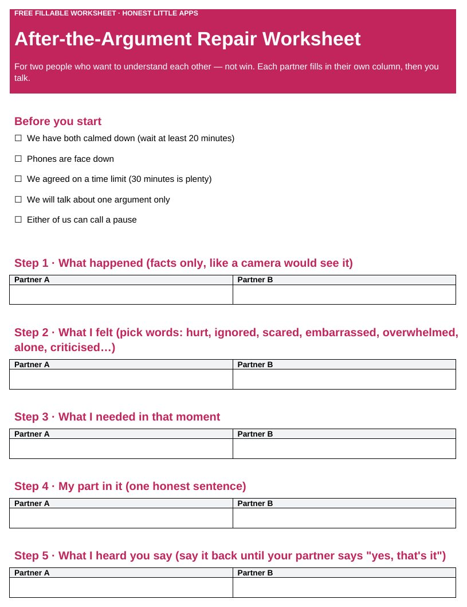

Home › Free Downloads › Word
Free Word downloadAfter-the-Argument Repair Worksheet
Seven short steps for two people who want to understand each other, not win: facts, feelings, needs, your part and what you’ll try next time.
⬇ Download the Word file .docx · free · no sign-upWorks in Microsoft Word, Google Docs (File → Open → Upload) and Apple Pages. Prints on US Letter and A4.

What’s inside
- Before-you-start checklist
- Side-by-side columns for both partners
- Say-it-back step so each person feels heard
- Next-time plan and a check-in date
How to use it
- Wait until you have both calmed down (at least 20 minutes).
- Each fill in your own column.
- Talk it through, then set a check-in date.

UnFight: Couples & Marriage
UnFight is a private place to pause during an argument, find clearer words and decide what to do next.
Get it free on the App StoreQuestions
When should we use it?
For everyday disagreements, once you have both calmed down.
What if the argument involved fear or threats?
Then this worksheet is not the right tool. Please reach out to a professional or a local support line.
Can we use it without printing?
Yes. Type into it in Word or Google Docs.
More free downloads
Daily Water Intake Tracker 2027Shift & Pay Tracker with OvertimeJob Estimate & Invoice TemplateClient Appointment Booking LogSleep Log & Bedtime Routine TrackerScreen Time Tracker: What Your Phone Really CostsBible Reading Tracker: All 66 BooksFamily Emergency Plan TemplateThe 11 Human Body Systems: Free SlidesBooks of the Bible by Section: Free SlidesWhy Is the Sky Blue and Sunsets Red? Free Slides